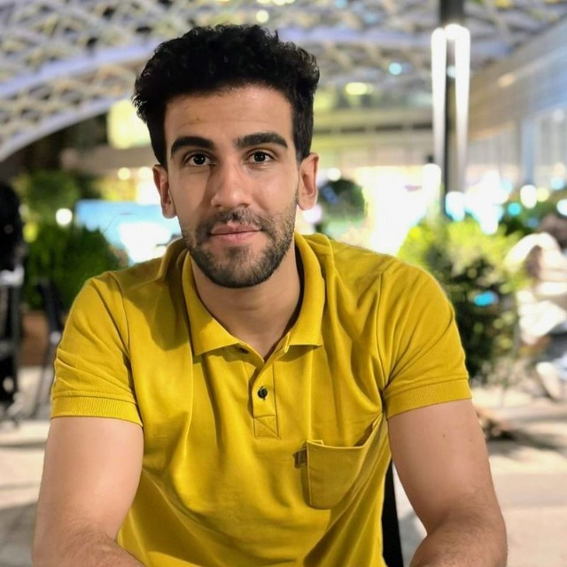

ICML 2026
SORA: Free Second-Order Attacks in Fast Adversarial Training
Adversarial robustness · Adversarial training
Machine learning & reliable AI
M.Sc. student at Sharif University of Technology
I study reasoning and explanation faithfulness in large language models, with a particular interest in whether chain-of-thought explanations reflect how models reach their answers. My research also spans adversarial robustness and multimodal understanding.
I work with Prof. Mohammad Hossein Rohban in the Robust and Interpretable Machine Learning Laboratory at Sharif University of Technology. Previously, I worked with Prof. Sauleh Eetemadi at Iran University of Science and Technology on visual illusions in multimodal models.

01 / Research
Reasoning and explanation faithfulness in LLMs: understanding the relationship between a model's chain of thought and the process behind its predictions.
ICML 2026
Adversarial robustness · Adversarial training
CVPR Workshops 2025
Multimodal understanding · Visual question answering
02 / Background
2024 – present
M.Sc. in Computer Engineering
Major: Artificial Intelligence and Robotics
GPA: 19.96/20 (Iranian scale) · 4.0/4.0 (converted equivalent)
Advisor: Prof. Mohammad Hossein Rohban
2020 – 2024
B.Sc. in Computer Engineering
GPA: 19.66/20 (Iranian scale) · 4.0/4.0 (converted equivalent)
Ranked 1st among 102 students
Advisor: Prof. Sauleh Eetemadi
Thesis: Illusory VQA: Benchmarking and Enhancing Multimodal Models on Visual Illusions
Grades are reported on the Iranian 0–20 scale.
Grade: 20/20 · Instructor: Ehsaneddin Asgari
Grade: 20/20 · Instructor: Ali Sharifi-Zarchi
Grade: 20/20 · Instructor: Marzieh Davoudabadi
Grade: 20/20 · Instructor: Mohammadreza Mohammadi
Grade: 20/20 · Instructors: Mohammad Hossein Rohban, Mahdieh Soleymani Baghshah, and Mahdi Samiei
Grade: 20/20 · Instructor: Mohammad Hossein Rohban
Grade: 20/20 · Instructor: Nasser Mozayeni
Grade: 20/20 · Instructor: Mohammadreza Mohammadi
Grade: 19.7/20 · Instructor: Amir Mahdi Sadeghzadeh
Grade: 20/20 · Instructor: Ali Sharifi-Zarchi
Grade: 20/20 · Instructors: Hamid R. Rabiee and Maryam Ramezani
Grade: 20/20 · Instructor: Mohammad Taghi Manzuri Shalmani
Grade: 20/20 · Instructor: Sauleh Eetemadi
Grade: 20/20 · Instructor: Sauleh Eetemadi
Audited · Sharif University of Technology
Instructor: Mohammad Hossein Rohban
Audited · Sharif University of Technology
Instructor: Mohammad Hossein Rohban
Audited · Carnegie Mellon University
Instructors: Daniel Fried and Graham Neubig
03 / Experience
Oct 2024 – present
Robust and Interpretable Machine Learning Laboratory
LLM reasoning and explanation faithfulness; adversarial robustness.
Jul 2025 – present
Python, PySpark, PyTorch, SQL, CatBoost, Airflow, MLflow, and Triton Inference Server.
Jul 2023 – Oct 2024
Natural Language Processing Laboratory
Visual question answering, visual illusions, and multimodal language models.
04 / Recognition
Recognition for outstanding academic achievement.
29th National Scientific Olympiad in Computer Engineering, Iran.
Received honorary master's admission from Sharif University of Technology, Amirkabir University of Technology, and Iran University of Science and Technology.
Among 102 Computer Engineering students in the 2020 entering class at Iran University of Science and Technology.
05 / Teaching
I have served as a teaching assistant at Sharif University of Technology and Iran University of Science and Technology since 2021, across machine learning, deep learning, artificial intelligence, and core computer science courses.
My head teaching assistant roles include Intelligent Analysis of Biomedical Images at Sharif University of Technology, and Software Engineering, Systems Analysis and Design, and Fundamentals of Database Design at Iran University of Science and Technology.
I also helped organize the first LLM Agents Hackathon at Sharif University of Technology in May 2025 and served as Chief Staff at the Rayan International AI Contest.
Teaching Assistant · Sep 2026 – Feb 2027
Teaching Assistant · Sep 2026 – Feb 2027; Sep 2025 – Feb 2026
Head Teaching Assistant · Aug 2025 – Feb 2026
Teaching Assistant · Sep 2025 – Feb 2026
Teaching Assistant · Sep 2025 – Feb 2026
Teaching Assistant · Oct 2024 – Feb 2025
Teaching Assistant · Oct 2024 – Feb 2025
Head Teaching Assistant · Feb – Jul 2024
Teaching Assistant · Feb – Jul 2024; Feb – Jul 2023
Teaching Assistant · Oct 2023 – Feb 2024
Teaching Assistant · Oct 2023 – Feb 2024; Sep 2023 – Feb 2024
Head Teaching Assistant · Sep 2023 – Feb 2024
Teaching Assistant · Feb – Jul 2023
Head Teaching Assistant · Feb – Jul 2023
Teaching Assistant · Sep 2022 – Feb 2023
Teaching Assistant · Feb – Jul 2022
Teaching Assistant · Sep 2021 – Feb 2022
06 / Contact
For research discussions and academic opportunities:
farzanrahmani70@gmail.comSharif University of Technology · Tehran, Iran